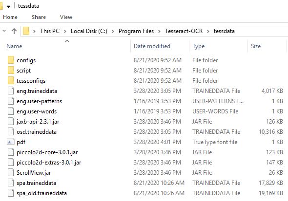
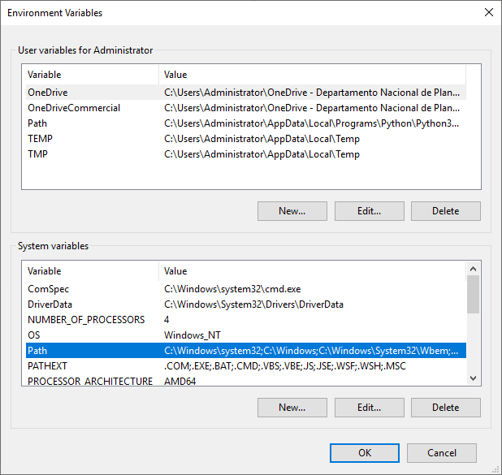
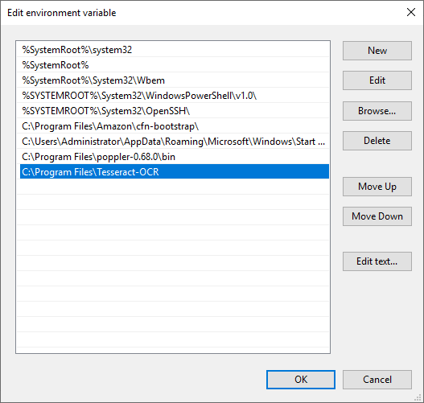

2.2. Instalación de Poppler y Tesseract en Windows¶
Nota
Los usuarios necesitarán contar con uno de los siguientes sistemas operativos, Windows 7, 8, 8.1 o 10 y con permisos de administrador, adicionalmente tener instalada la versión 3.6 de Python o una versión superior.
La guía presentada a continuación se desarrolló utilizando la versión de Python 3.8.5 sobre el sistema operativo de Windows 10.
2.2.1. Instalación de Poppler¶
Descargar el último archivo binario de poppler desde http://blog.alivate.com.au/poppler-windows/
Extraer el archivo dentro del disco local “C:” en la carpeta de archivos de programa “C:\Program Files”. Para esto debe tener instalado un programa que permita descomprimir archivos (como WinRAR o 7zip), ya que el archivo binario se descarga en formato comprimido.
Agregar la ruta de la carpeta bin de poppler “C:\Program Files\poppler-0.68.0_x86\bin” al path del sistema haciendo lo siguiente:
En el explorador de archivos hacer clic derecho sobre “This PC” (“Este equipo”) (* se presentarán los nombres en español dentro de paréntesis como referencia para los usuarios que tengan el sistema operativo en ese idioma.) y luego clic en “Properties” (“Propiedades”).
Hacer clic en la opción “Advanced system settings” (“Configuración avanzada del sistema”) ubicada en la parte superior izquierda.
Se abrirá una nueva ventana de “System Properties” (“Propiedades del sistema”), aquí se debe hacer clic en la opción de “Environment Variables…” (“Variables de entorno…”).
En la sección de “System variables” (“Variables del sistema”) se debe hacer doble clic en la variable “Path”.
Se abrirá una nueva ventana de edición de las variables de entorno, al hacer clic en el botón “New” (“Nuevo”) se podrá ingresar la ruta de la carpeta bin que está dentro del archivo que se extrajo previamente.
Se debe copiar la ruta donde se encuentra la carpeta bin de poppler, la ruta debería ser “C:\Program Files\poppler-0.68.0\bin” si el archivo binario de poppler se extrajo en archivos de programa.
Finalmente se agrega la ruta “C:\Program Files\poppler-0.68.0\bin” en la ventana de edición de variables de entorno y se hace clic en “OK” (“Aceptar”) para guardar los cambios y cerrar las ventanas.
2.2.2. Instalación de Tesseract¶
Desde https://github.com/UB-Mannheim/tesseract/wiki se debe descargar la versión más reciente de tesseract, aquí se descargará un archivo ejecutable (.exe) el cual se debe instalar haciendo doble clic sobre el archivo descargado y siguiendo las instrucciones de instalación.
Añadir otros idiomas al reconocimiento óptico de caracteres (OCR).
Nota
Para añadir otros idiomas al OCR se deben descargar los archivos de entrenamiento en el idioma deseado, los cuales se encuentran disponibles en: https://github.com/tesseract-ocr/tessdata . (Para el desarrollo de este manual se hará el ejemplo con el idioma español.)
Por defecto en la instalación se cargan los archivos del idioma Inglés, sin embargo, estos corresponden a un corpus pequeño, por lo que se recomienda descargar nuevamente los archivos para este idioma desde el enlace mencionado anteriormente.
Para el idioma español se descargarán los archivos spa.traineddata y spa_old.traineddata los cuales están disponibles en los siguientes enlaces:
https://github.com/tesseract-ocr/tessdata/blob/master/spa_old.traineddata
https://github.com/tesseract-ocr/tessdata/blob/master/spa.traineddata
Los archivos descargados se deben copiar y pegar en la carpeta tessdata que se encuentra en la carpeta tesseract-OCR que se creó al instalar el archivo .exe de tesseract. La ruta podría verse como “C:\Program Files\Tesseract-OCR\tessdata” que fue la ruta que se creó al momento de hacer el desarrollo de este manual.
Abrir la ventana de variables de entorno de la misma forma que se hizo para la Instalación de Poppler, y hacer doble clic en la variable “Path”, para abrir el editor de las variables de entorno.
En el editor de las variables de entorno se debe hacer clic cobre el botón “New” (“Nuevo”) y colocar la ruta que se creó al momento de hacer la instalación de tessereact, la ruta podría verse como “C:\Program Files\Tesseract-OCR”. Hacer clic en “OK” (“Aceptar”) para guardar los cambios y cerrar las ventanas.
